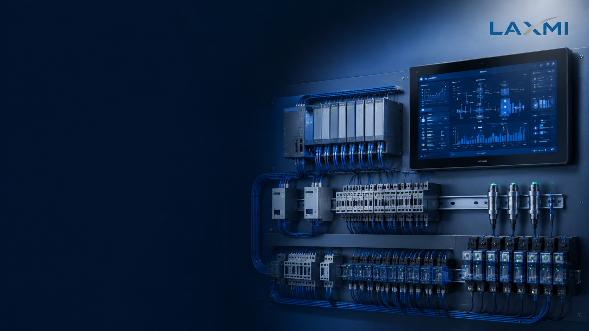

Capital allocation
Higher integration adds controls, instrumentation and engineering cost. That additional investment needs a measurable business purpose.

AAC Engineering Center · Automation
Understand where manual, semi-automatic and fully automatic systems differ—and select an automation scope that matches sustained production, available skills and lifecycle economics.
For new plants, expansion projects and automation upgrades in India.
Direct answer
The right automation level is not automatically the highest available level. It is the one that fits the plant’s real operating requirement.
Why the decision matters
It affects far more than operator count. It changes production sequencing, technical skill requirements, fault recovery, maintenance exposure and the cost of producing each saleable cubic metre.
Higher integration adds controls, instrumentation and engineering cost. That additional investment needs a measurable business purpose.
Automation creates value when line coordination and reduced waiting support production that can actually be sold.
Routine initiation may reduce, while dependence on supervision, electrical, instrumentation and maintenance skills increases.
Expansion is easier when interfaces, layout and controls architecture are planned before the first phase is installed.
Three operating models
These definitions describe the Laxmi En-Fab automation framework. Final scope must always be confirmed equipment by equipment.
Operators perform or directly initiate a larger share of machine movements, material transfers, sequencing and process checks. Lower automation-related investment may be offset by higher dependence on training, supervision and labour.
Individual machines operate automatically, but they are not completely interconnected as one continuous production sequence. An operator may confirm completion and initiate the next defined operation or transfer.
Included production machines are interconnected through PLC-based logic, instrumentation and central monitoring. During normal automatic operation, defined transfers proceed without routine operator initiation.
The manpower myth
Fully automatic does not mean manpower-free.
Automation changes the type of manpower required. Supervision, laboratory control, cleaning, preventive maintenance, fault recovery and activities outside the automation boundary remain necessary.
Side-by-side comparison
| Decision factor | Manual | Semi-automatic | Fully automatic |
|---|---|---|---|
| Machine control | More direct operator initiation | Individual machines perform automatic cycles; transfers may require confirmation | Included machines and transfers follow an interconnected sequence |
| Operator role | Frequent operation and sequence control | Monitoring plus defined start or confirmation actions | Supervision, exception handling and fault recovery |
| Control architecture | Basic or local controls | Local PLCs or independent controls; central monitoring may be added | Interconnected PLC architecture with central HMI/SCADA where included |
| Fault effect | Often more localised | May be isolated by section, subject to design | May affect connected sections; bypass and recovery philosophy become important |
| Technical skills | Strong operator supervision | Operators plus electrical and mechanical support | Stronger automation, instrumentation, electrical and mechanical support |
| Best-fit condition | Defined low-output, capital-constrained case after lifecycle review | When flexibility and moderate integration suit expected output | When sustained throughput benefits justify complexity and cost |
The final classification depends on the exact equipment, material-handling and control scope included in the proposal.
Selection method
Begin with the business requirement, then define the automation. This prevents technology selection from running ahead of realistic demand.
Start with market demand, dispatch requirement, product mix, shifts and realistic operating days.
Allow for maintenance, cleaning, raw-material variability, utility interruptions and normal operating losses.
Identify exactly where people initiate, supervise, transfer, record, clean and recover the process.
Include additional investment, manpower, output benefit, maintenance, spares and specialist support over the same period.
Review references, FAT/SAT criteria, program ownership, backups, training and service responsibilities.
Commercial justification
A fully interconnected plant is more likely to create value when saleable output is sustained, the line is balanced, utilities are stable and the organisation can maintain controls and instrumentation.
Additional automation investment ÷ verified annual net benefit = simple payback period
Annual benefit should use project-specific labour, saleable output, measurable losses, maintenance, software, specialist support, financing and implementation-downtime assumptions.PLC, SCADA and control scope
The presence of a PLC or SCADA screen does not by itself prove complete automation.
Important limitation
Product quality also depends on raw-material properties, recipe control, laboratory testing, equipment condition, curing conditions, cutting accuracy and operating discipline.
AAC block requirements in India should be reviewed against the applicable current scope of IS 2185 (Part 3) and other relevant requirements. Pressure equipment, boilers, electrical systems and safety interlocks require separate statutory and engineering review.
Quotation review
Comparing only the words “semi-automatic” and “fully automatic”.
Comparing manpower without checking plant boundary and shifts.
Using nameplate capacity as expected saleable output.
Ignoring packing, loading, cleaning and quality-control activities.
Not checking fault isolation, manual mode and sequence recovery.
Accepting PLC or SCADA as a complete scope description.
Ignoring backups, passwords, licences and program handover.
Selecting automation without confirming local maintenance skills.
Automating a section that is not the actual bottleneck.
Failing to plan expansion interfaces at the initial stage.
Engineering before equipment
The discussion begins with the production and business requirement—not a predetermined automation label.
Investor questions
A commercially relevant next step
Share your proposed saleable output, operating pattern, project location, current stage and expansion plan. The discussion will focus on the process scope and automation questions that should be resolved before equipment selection.